Variables
I use variables to keep patterns and consistency
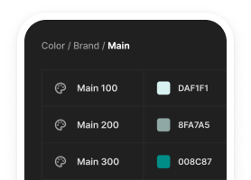
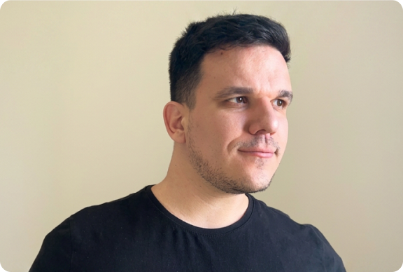
I'm a Product Designer who enjoys combining creativity with structure. I see products as a collection of building blocks, creating reusable solutions that help teams build scalable, consistent and flexible experiences, just like LEGO.
I believe great design should be beautiful, but I also ensure my Figma files are well-structured and easy to navigate, helping the team collaborate seamlessly
I use variables to keep patterns and consistency

I create reusable components that make me work faster
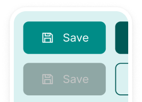
I keep my projects easy to read with organization
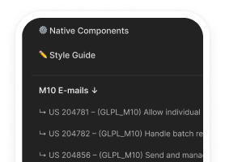
I can work across a wide array of design styles, from joyful and playful to well toned systems
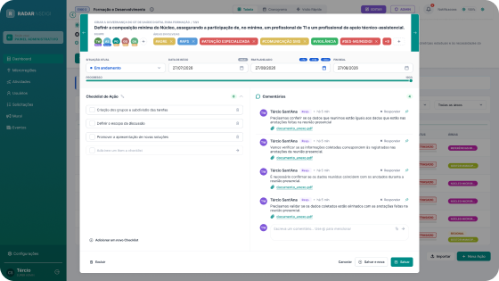
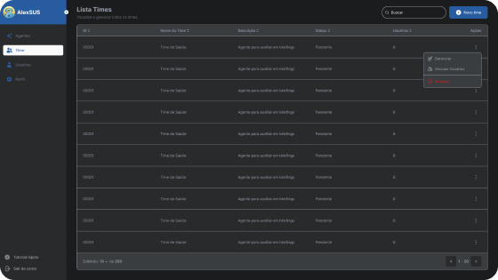
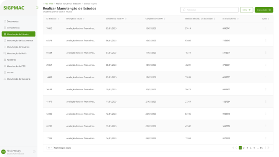
My most meaningful project, showcased throughout a case study
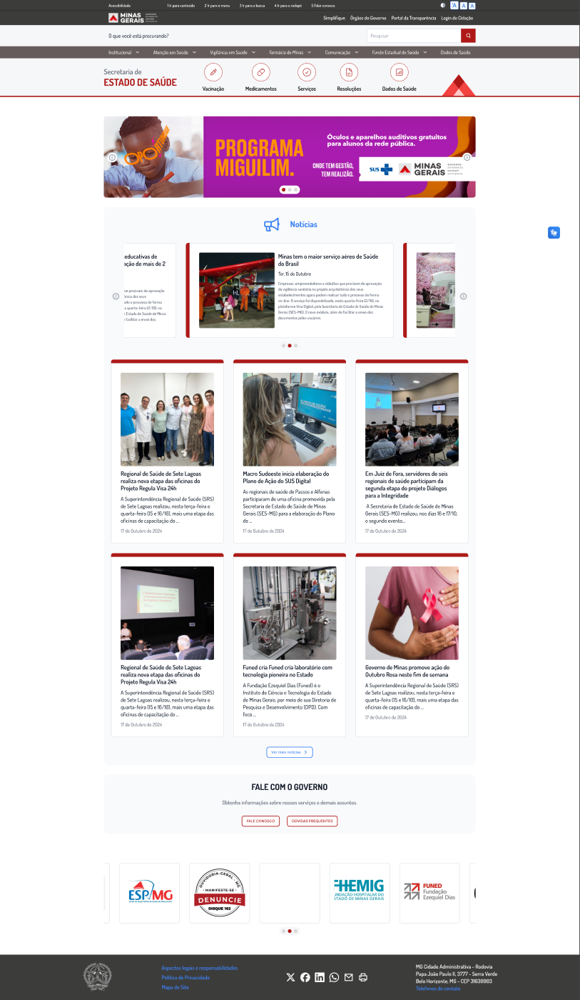
Redesign of the official health portal of a state with 21 million people: from audit to launch.
The SES-MG portal is the digital front door to public health in Minas Gerais. Citizens come looking for vaccines or medicines, municipal managers for resolutions and funding transfers, and health professionals for bulletins and protocols.
The old site did not live up to that role. It also needed to get ready to grow, becoming the entry point to several Minas Gerais government subsystems.
The menu had several nested sublevels, and it was hard to know where each piece of content lived.
Every button, banner and card followed a different style.
The portal followed neither the Brazilian Government Digital Standard nor the WCAG accessibility criteria a public website should meet.
Finding a specific document or service came down to luck.
Before designing anything, I mapped every possible path through the site and inventoried each component: where it appeared, what it was for and how it varied. The categorization document recorded buttons, cards, search field, carousels, menu and footer.
Why: on a public website with years of accumulated content, redesigning without that map would mean losing pages or repeating the same problems with a new look.
I restructured the site hierarchy into two layers that live side by side:
On the home page I added shortcuts to the most searched tasks: Vaccination, Medicines, Services, Resolutions and Health Data. Anyone arriving with a specific need gets there in one click, without going through the menu.
Each of the roughly 65 screens was numbered by its position in the hierarchy (e.g. 1.7.3 Councils, 2.8.2 Campaigns), giving the development team and the Department a shared reference to discuss the site.
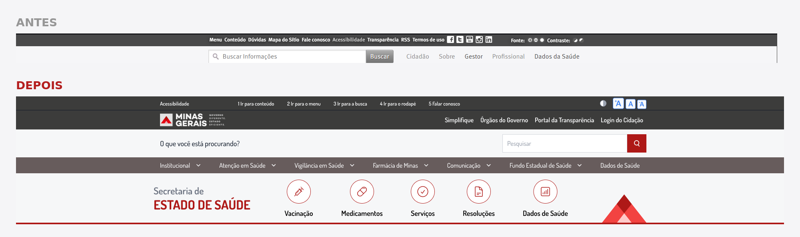
With the inventory in hand, I created the components that replaced dozens of old variations: buttons, news cards, banners, carousels, date display, search field, menu, footer and page templates. On top of them I added a style guide with around 390 icons.
That foundation became the institutional Design System. Every screen uses the same components, which keeps things consistent and lets new pages be created without starting from scratch.
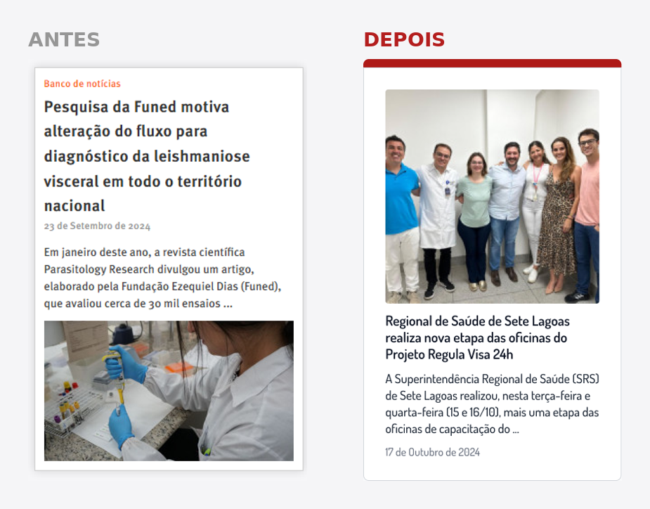
Since a large share of visits are about finding a specific document or service, search got its own attention:
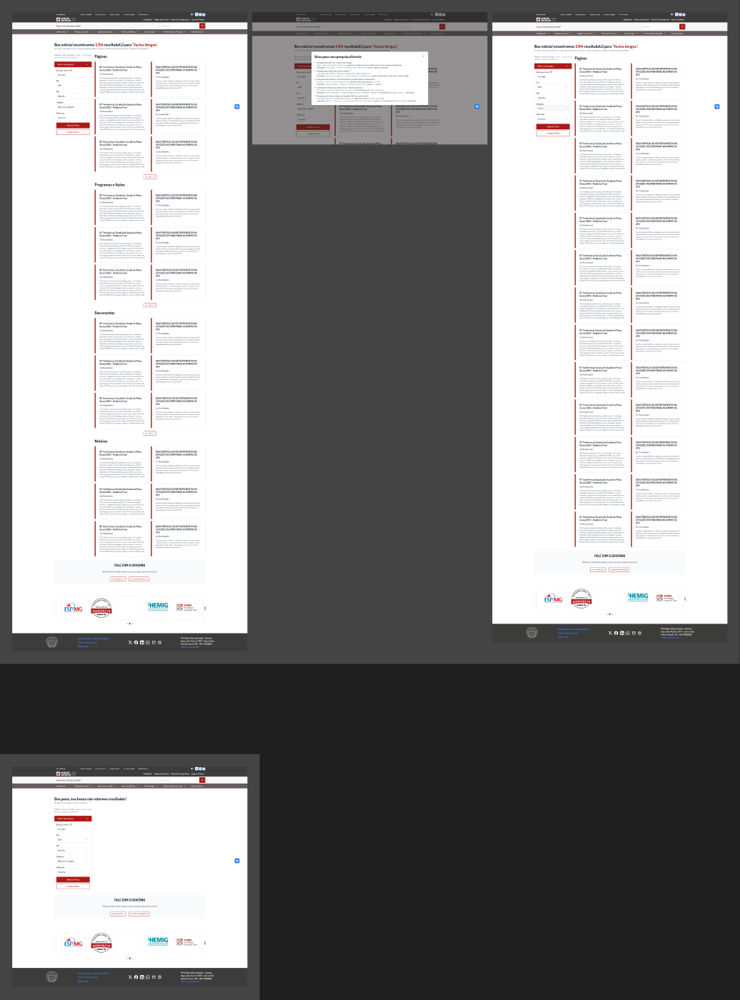
I followed the Government Digital Standard and aimed to meet WCAG as fully as possible:
As the sole designer, I coordinated the process and worked directly with the Department's team. Each delivery went through one or two rounds of presentation and adjustment before approval, with constant alignment with the PM and developers to make sure the solutions were feasible.
Beyond design, I led the handoff with the development team: delivering documented screens, explaining behaviors and components, answering questions during implementation and reviewing what was being built. That closeness is what allowed a 65-screen project to reach launch.
Handoff doesn't end when the file is delivered. Part of the implementation drifted from the prototype. Today I follow quality review together with the development team until launch.
Validate with end users. Validation was done with the Department. In a next cycle, usability tests with citizens and managers would show whether the shortcuts and the new search solve the most common tasks.